Catálogo de Sensores IoT e Industriais
Catálogo técnico com 25 sensores utilizados em projetos de Internet das Coisas e Automação Industrial com Arduino, ESP32, Raspberry Pi e CLPs. Use a busca ou os filtros por categoria para encontrar o sensor ideal para o seu projeto.
Cada sensor conta com página própria trazendo conceito, princípio de funcionamento, especificações técnicas, tipo de sinal, aplicações, exemplo de uso e fabricantes/modelos comerciais.
Mostrando 25 de 25 sensores
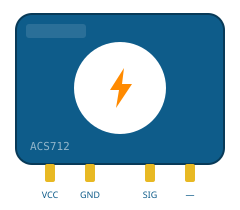
CorrenteACS712
Analógico (tensão proporcional à corrente) com código Arduino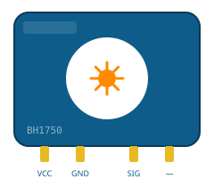
LuminosidadeBH1750
Digital (I2C) Peso
Peso
Célula de Carga + HX711
Digital (2 fios, protocolo próprio do HX711) Temperatura e Umidade
Temperatura e Umidade
DHT11
Digital (protocolo próprio, 1 fio) com código Arduino Temperatura e Umidade
Temperatura e Umidade
DHT22 (AM2302)
Digital (protocolo próprio, 1 fio)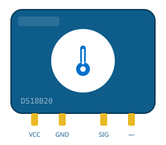
TemperaturaDS18B20
Digital (1-Wire, Dallas/Maxim) com código Arduino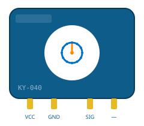
EncoderEncoder Incremental KY-040
Digital (quadratura + botão) com código Arduino Distância
Distância
HC-SR04
Digital (pulsos Trigger/Echo) com código Arduino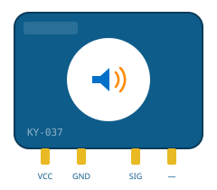
SomKY-037
Analógico e Digital (limiar ajustável)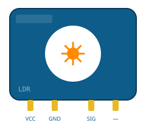
LuminosidadeLDR
Analógico com código Arduino TemperaturaLM35
Analógico (tensão proporcional, 10mV/°C)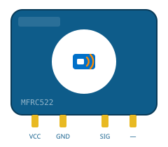
RFIDMFRC522 (RFID)
Digital (SPI) com código Arduino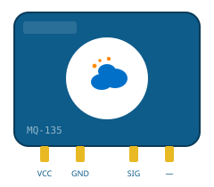
GásMQ-135
Analógico e Digital (limiar ajustável)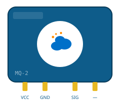
GásMQ-2
Analógico (nível de gás) e Digital (limiar ajustável) com código Arduino Movimento
Movimento
PIR HC-SR501
Digital com código Arduino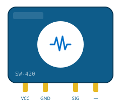
VibraçãoSW-420
Digital com código Arduino Proximidade
Proximidade
Sensor Capacitivo LJ18A3
Digital (NPN/PNP) Umidade
Umidade
Sensor Capacitivo de Umidade do Solo
Analógico com código Arduino Chuva
Chuva
Sensor FC-37 (Chuva)
Analógico e Digital (limiar ajustável) Rotação
Rotação
Sensor Hall A3144
Digital (coletor aberto) Proximidade
Proximidade
Sensor Indutivo LJ12A3
Digital (NPN/PNP) Chama
Chama
Sensor de Chama IR
Analógico e Digital (limiar ajustável) Nível
Nível
Sensor de Nível (Boia)
Digital (contato seco / reed switch)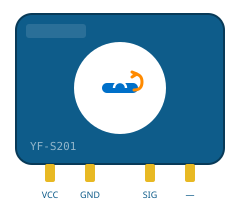
FluxoYF-S201
Digital (trem de pulsos) com código Arduino Tensão
Tensão
ZMPT101B
Analógico (onda senoidal, requer calibração)Nenhum sensor encontrado para essa busca/filtro.